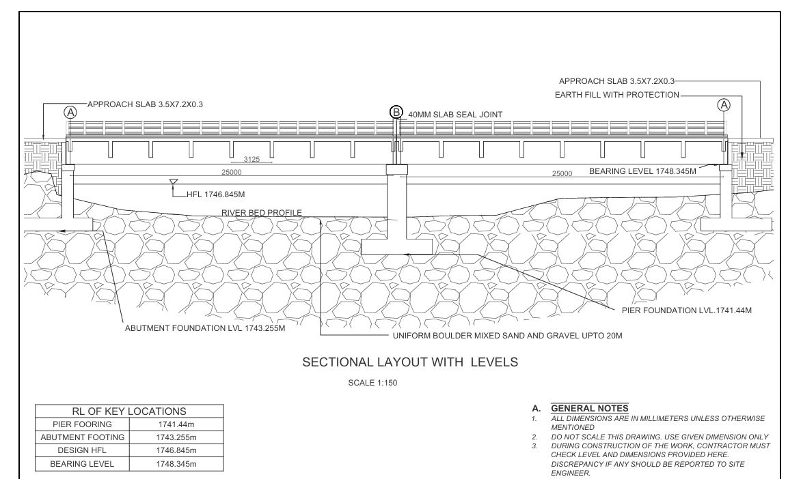
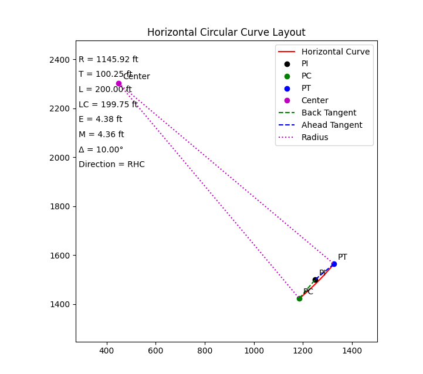
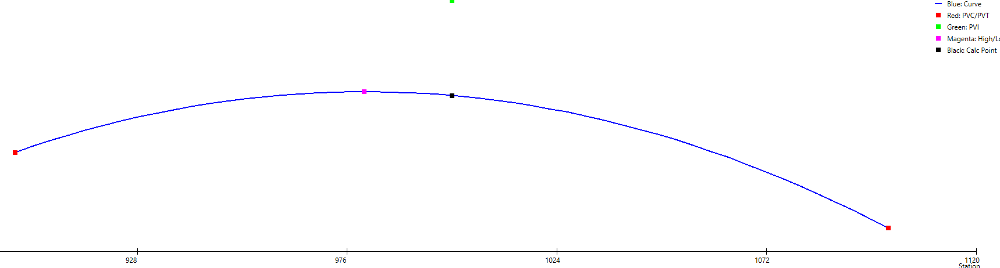
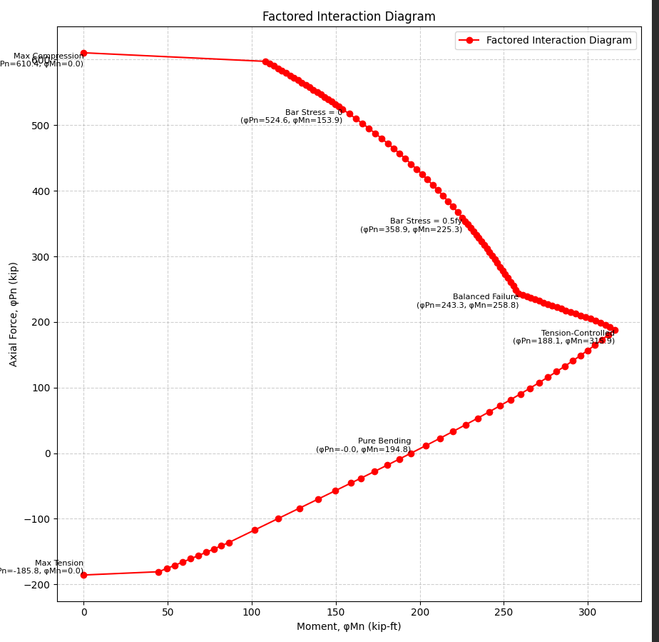

Graduate Project
Analyzed the stress-strain behavior of confined green concrete as part of my Master's thesis project.

Undergraduate Project
Designed a T-beam concrete bridge using the Limit State Approach.

Horizontal Curve
Python code for visualization of horizontal circular curves.

Vertical Curve
Python code for visualization of vertical parabolic curve and its components.

Interaction Diagram
Python code for interaction diagram of rectangular beams.